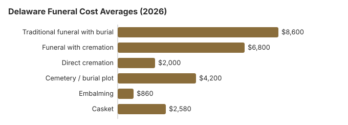

Funeral Costs in Delaware: What Families Pay in 2026
Nothing about Delaware funeral pricing is fixed. The same traditional service quoted at $8,600 from one Delaware provider can run $6,450 or $11,180 at the next; that variation is the single most important thing to understand before you commit. This guide lays out typical Delaware costs and where the gaps tend to show up.
What a Funeral Costs in Delaware, Item by Item
Individual prices in Delaware still vary by provider, and the DE Board of Funeral Services licenses Delaware homes without setting their prices.
| Service | Average Cost | Range |
|---|---|---|
| Traditional funeral with burial | $8,600 | $6,450 – $11,180 |
| Funeral with cremation | $6,800 | $5,440 – $8,840 |
| Direct cremation | $2,000 | $1,400 – $2,800 |
| Cemetery / burial plot | $4,200 | $2,100 – $8,400 |
| Embalming | $860 | $500 – $1,500 |
| Casket | $2,580 | $860 – $6,880 |
Methodology note: These figures are our estimates, not a survey of local providers, and they are not a quote or professional advice. See how we calculate them or read the full disclaimer.
State sources: 16 Del. Admin. Code 2000-2020; Delaware DSS indigent burial service; 24 Del. C. §3119.

What Pushes a Delaware Funeral Bill Up or Down
What you pay for a funeral in Delaware depends on a cluster of local factors rather than any single number. Cost of living in Delaware, how many funeral homes compete in your area, whether Delaware state regulations require specific steps, and local real estate prices for funeral home facilities all feed into quotes. Northeast pricing is generally higher than the US median of $8,300, and metro-versus-rural pricing in Delaware routinely differs by 10-30%.
At 55%, Delaware's cremation rate is 8.4 points below the 63.4% national rate that NFDA projected for 2025.
Rights Every Funeral Buyer Has in Delaware
If you believe a funeral home in Delaware has violated these rights, you can file a complaint with the FTC at ftc.gov or contact the Funeral Consumers Alliance for guidance.
Funeral Prices Across Delaware Cities
Funeral costs vary across Delaware's major metropolitan areas. Here are the major cities in Delaware:
Hidden Funeral Fees in Delaware: What to Watch For
Quoted prices in Delaware rarely include every charge.
- Embalming is almost never a legal requirement in Delaware, even when a funeral home lists it as one.
More Delaware Cost Guides
For deeper analysis on specific disposition types in Delaware, see our dedicated guides:
Cremation Costs in Delaware
Complete guide to cremation pricing in Delaware including direct cremation from $2,000, cremation with service from $6,800, urn options, scattering regulations, and memorial alternatives. The cremation rate in Delaware is 55%.
Burial Costs in Delaware
Detailed breakdown of burial expenses in Delaware including cemetery plots from $4,200, caskets, vaults, headstones, and opening/closing fees. Total burial costs in Delaware range from $19,660 to $24,160.
Cremation vs. Burial in Delaware
Cremation
- Direct cremation from $2,000
- Cremation with service from $6,800
- No cemetery plot required
- More flexible memorial options
- Current rate: 55% of families
Traditional Burial
- Traditional service from $8,600
- Cemetery plot from $4,200
- Vault or liner typically required
- Permanent memorial location
- Metal casket: about $2,500 national median (NFDA 2023 General Price List Study); Delaware prices vary by seller
Lower-Cost Funeral Choices in Delaware
| Option | Estimated Cost | What's Included |
|---|---|---|
| Direct cremation | $2,000 | Cremation with no viewing or service; Delaware needs a permit but sets no fixed wait (16 Del. C. § 3159). |
| Direct burial | $4,300 | Burial soon after death without embalming or viewing; the Delaware cemetery charges for the plot and opening separately. |
| Green burial | $4,730 | Natural burial without embalming or a vault, where a Delaware cemetery permits it. |
| Cremation + memorial | $6,800 | Cremation followed by a separate memorial service |
| Traditional funeral | $8,600 | Full service with viewing, ceremony, and burial |
What's Specific to Delaware (Northeast)
Help Paying for a Funeral in Delaware
- Delaware's $100 DSS payment is small, so ask the Division of Social Services about its separate indigent burial service as well when no one can pay.
- To collect the one-time $255 from Social Security, a Delaware widow, widower or eligible child must call 1-800-772-1213, and the claim has to be made within two years.
- VA reimburses part of a Delaware veteran's funeral through Form 21P-530EZ, filed by whoever paid; deaths not connected to service on or after October 1, 2026 qualify for up to $1,032 for burial and $1,032 for the plot, as our veteran burial benefits guide explains.
- More options for Delaware families, including Medicaid and charity help, are in our funeral payment assistance guide and how to pay for a funeral with no money.
Educational Resources
- Funeral Consumers AllianceIndependent nonprofit consumer advocacy for funeral rights
- FTC Funeral RuleThe federal rule protecting funeral consumers
- Funeral Insurance GuideCompare final expense and burial insurance options
- Best Burial Insurance CompaniesSide-by-side comparison of top burial insurance providers
- Payment Assistance GuideGovernment programs and financial help for funeral costs
- Insurance Plan ComparisonCompare coverage, premiums, and payout speed across providers
Compare Funeral Costs
- Average Funeral Cost in 2026National cost breakdown with real prices
- Cremation vs. Burial Cost ComparisonSide-by-side price comparison to help you decide
- Funeral Cost BreakdownEvery line item explained: know what you're paying for
- Cheapest Funeral OptionsLower-cost alternatives, with typical price ranges
- Direct Cremation: Most Affordable OptionNFDA 2023 median $2,645 with a family-supplied container (latest available)
- How to Compare Funeral PricesStep-by-step guide to getting the best price
Steps for Planning a Funeral in Delaware
Families arranging a funeral in Delaware for the first time often move faster than they need to.
- Decide on disposition: cremation in Delaware or burial in Delaware.
Funeral rules and help in Delaware
If a funeral home in Delaware refuses to show prices or pressures you, the licensing body is the Delaware Division of Professional Regulation, reachable at 302-744-4500.
Hiring a funeral home is a choice, not a legal requirement, for most steps of a funeral in Delaware; the Funeral Consumers Alliance does not count Delaware among the nine states with funeral-director rules, and you can buy only the services you want.
Cremation timing: Delaware sets no fixed waiting period before cremation, but a permit is needed first (16 Del. C. § 3159).
Delaware's Division of Social Services pays up to $100 toward funeral expenses when the person was receiving TANF, General Assistance or Medicaid at death (16 Del. Admin. Code 2000-2020); the next of kin sends a written request with the death certificate and proof of the bill, and DSS pays the funeral home. Separately, DSS buries indigent or unclaimed people at state expense through its indigent burial service. (Source: 16 Del. Admin. Code 2000-2020; Delaware DSS indigent burial service.) Social Security's one-time $255 death payment, paid only to a qualifying spouse or child, is small next to the $8,600 average Delaware funeral in the table.
Delaware's state-run veterans cemeteries, Delaware Veterans Memorial Cemetery - New Castle County (302-834-8046) or Delaware Veterans Memorial Cemetery - Sussex County (302-934-5653), take requests directly, and the VA supplies the veteran's headstone or marker there at no charge.
Next steps for a funeral in Delaware
- Get written price lists from at least two Delaware funeral homes before you agree to anything.
- Decide early whether you want embalming and a viewing in Delaware; skipping them is often the largest saving.
- Send the Delaware Division of Social Services a written request, the death certificate and the funeral bill if the person was on TANF, General Assistance or Medicaid.
- For a veteran, price Delaware Veterans Memorial Cemetery - New Castle County against a private Delaware plot before choosing.
- Keep the board's number, 302-744-4500, in case a funeral home will not honor its price list.
Frequently Asked Questions
What is the average price of a funeral in Delaware right now?
Current averages in Delaware come in at $8,600 for a traditional funeral, $6,800 for cremation with a service, and from $2,000 for direct cremation, with the traditional figure sitting near the $8,300 US median. Cemetery and burial fees add roughly $4,200 when a Delaware family chooses burial.
Is cremation cheaper than burial in Delaware?
In Delaware, direct cremation at $2,000 costs about $6,600 less than the $8,600 traditional funeral, and roughly $10,800 less once about $4,200 in cemetery costs is added.
What rights do Delaware families have when arranging a funeral?
In Delaware, as everywhere in the US, the FTC Funeral Rule requires an itemized General Price List, phone price quotes, and no fee for using a casket bought elsewhere. According to the Funeral Consumers Alliance, Delaware does not require families to hire a funeral director for every step. The Delaware Division of Professional Regulation, 302-744-4500, licenses Delaware funeral homes and takes complaints.
How do I keep funeral costs down in Delaware?
Three moves cut the most: compare at least three Delaware General Price Lists side by side before choosing a provider, strip packages down to only the services you actually want, and choose direct cremation ($2,000) if cost is the priority. Request frozen-ground pricing separately if the death is between December and March; Delaware cemeteries often charge extra in winter. Municipal, Catholic, and Jewish cemeteries in Delaware generally price below private memorial parks by $1,000 or more.
Does Delaware require embalming?
Not if you choose refrigeration or a sealed casket. Under the Division of Public Health's rule (16 Del. Admin. Code 4602 § 10), a body kept more than 24 hours must be embalmed, placed in an industry-standard refrigerator, or put in a sealed casket that is not opened again, and burial or cremation has to happen within five days unless the state issues a permit.
Bodies stored in a receiving vault must be embalmed, and a body shipped by common carrier more than 24 hours after death must be embalmed or sealed in a metal case. Embalming in Delaware costs about $860 on this page's estimate.
Is Delaware cheaper or more expensive than the US average for funerals?
Delaware keeps funeral homes and cemeteries apart. Under 24 Del. C. §3119, a licensee may not interfere with a family's free choice of funeral home, run a mortuary inside a cemetery, or take any fee or benefit from a cemetery, crematory or natural organic reduction facility. Compare Delaware quotes with the national median of $8,300 with viewing and burial, or $6,280 with cremation (NFDA 2023).
Which funeral option costs the least in Delaware?
Direct cremation carries the lowest price tag in Delaware, from roughly $2,000. Direct burial is the next step up at about $4,300, which is $4,300 below a traditional Delaware funeral.
How can I find affordable funeral homes in Delaware?
Ask at least three Delaware providers for their General Price Lists and compare direct cremation and immediate burial lines. Buying the casket or urn elsewhere is allowed under the FTC Funeral Rule, and the Delaware home cannot charge a fee for it.